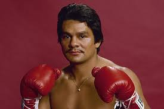

В июне 1980 года состоялся бой между Роберто Дураном и непобеждённым чемпионом мира в полусреднем весе по версии WBC Шугаром Рэем Леонардом. Дуран выиграл по очкам. Это было первым поражением в карьере Леонарда. Ещё до боя Дуран вывел Леонарда из равновесия своими провокационными действиями. В бою Дуран придерживался агрессивной тактики, нередко зажимая Леонарда возле канатов и бомбя тяжелыми сериями ударов. Уже во втором раунде Дуран успешно провел тяжелый удар слева, которым потряс своего визави. Потрясенный Леонард вынужден был отказаться на время от активных действий, чтобы прийти в себя. Подобное решение стоило Леонарду нескольких проигранных раундов, однако, благодаря этому американский боксер сумел восстановиться и позже достаточно достойно сопротивляться агрессивному натиску своего панамского противника. В конце боя Леонард выглядел изрядно уставшим. В завершающем раунде Дуран даже позволил себе слегка поиздеваться над противником. В целом бой прошёл под диктовку панамца, который и выиграл его довольно уверенно. Тем не менее, стоит отметить что и Леонард не был грушей для битья, мужественно обороняясь, имел немало успешных эпизодов по ходу поединка, однако в том бою Дуран объективно выглядел лучше.
В ноябре 1980 состоялся повторный бой между Дураном и Леонардом. Перед боем у Дурана имелись проблемы с весом — по слухам бывший легковес показывал на весах цифры в районе 90 килограмм. Также известно что после своей первой победы над Леонардом Дуран, что называется, «почивал на лаврах» и его дисциплина дала серьезный сбой. Как результат, в 8-м раунде Дуран капитулировал, сказав знаменитую фразу «no mas». Бытует мнение что фраза была несколько другой и позже была слегка додумана для придания большей эпичности моменту. Сам Дуран говорил позже что вынужден был капитулировать ввиду спазмов в животе, как следствия пропущенных ударов по корпусу. Но тем не менее, как бы то ни было, повторный бой и близко не напоминал первый. Находясь в отвратительной форме, Дуран был буквально деклассирован противником. После этого боя у Дурана на определённое время начался спад в карьере, но тем не менее легендарный панамец позже нашёл в себе силы вернуться на вершину боксерского олимпа.
В июне 1982 года Дуран вышел на бой против чемпиона мира в 1-м среднем весе по версии WBC Уилфред Бенитес. Бенитес выиграл по очкам.
В сентябре 1982 года панамец раздельным решением судей проиграл малоизвестному Киркленду Лейнгу. Поединок получил статус «Разочарование года» по версии журнала «Ринг».
В июне 1983 года Дуран вышел на ринг против чемпиона мира в 1-м среднем весе по версии WBA Дейви Мура. В 8-м раунде бой был остановлен рефери, так как это превратилось в избиение Мура.
В ноябре 1983 года Роберто Дуран вышел на ринг против абсолютного чемпиона мира в среднем весе Марвина Хаглера. Бой вышел близким и достаточно конкурентным. В отличие от большинства своих предыдущих боев в этом поединке Дуран чаще работал вторым номером, отказываясь от своей привычной агрессивной тактики. Подобная стратегия панамца может быть объяснена превосходством Хаглера в габаритах и ударной мощи. Тем не менее, панамский атлет сумел составить достойную конкуренцию физически более мощному оппоненту. Стоит отметить, что оба боксера снискали славу сильных панчеров, что сказалось на рисунке боя: весь бой присутствовало психологическое напряжение и оба атлета не торопились идти друг на друга с «открытым забралом», опасаясь жестких ударов со стороны противника. Тем не менее, даже несмотря на подобную осторожность, бой вышел весьма зрелищным. Незадолго до окончания поединка, после одного из самых успешных для Дурана раундов, Хаглер получил небольшое рассечение. Тем не менее, активизировавшись в финальных раундах, Хаглер сумел вырвать победу. Итог: победа Хаглера единогласным решением в близком бою.
В июне 1984 года Дуран встретился с чемпионом мира в 1-м среднем весе по версии WBC Томасом Хирнсом. Хирнс нокаутировал панамца во 2-м раунде. После этого боя эксперты поставили крест на Дуране.
В июне 1986 года панамец раздельным решением судей проиграл малоизвестному Робби Симсу.
В феврале 1989 года Роберто Дуран вышел на бой против чемпиона мира в среднем весе по версии WBC Айрена Баркли. Бой носил открытый характер — оба противника пытались друг друга перерубить. Ближе к концу боя панамец оформил один из эффектнейших нокдаунов в истории бокса, проведя комбинацию из нескольких левых хуков и правых кроссов. Дуран победил раздельным решением судей. Поединок получил статус «бой года» по версии журнала «Ринг».
В декабре 1989 года состоялся 3-й бой между Роберто Дураном и чемпионом мира во 2-м среднем весе по версии WBC Шугаром Рэем Леонардом. Леонард легко выиграл по очкам постаревшего оппонента.
В марте 1991 года Дуран вышел на ринг против малоизвестного Пэта Лоулора. В 6-м раунде Дуран травмировал плечо. Бой был прекращён. Лоулор победил техническим нокаутом.
В июне 1994 года Дуран проиграл по очкам Винни Пациенце.
В январе 1995 года он в реванше вновь проиграл Пациенце.
В июне 1996 года Роберто Дуран проиграл по очкам Эктору Камачо.
В феврале 1997 года в Аргентине Дуран проиграл аргентинцу Хорхе Фернандо Кастро.
В июне 1997 года в Панаме Дуран в реванше победил Кастро.
В августе 1998 года Роберто Дуран вышел на бой против чемпиона мира в среднем весе по версии WBC Уильяма Джоппи. Джоппи односторонне избил и нокаутировал постаревшего Дурана в 3-м раунде.
В марте 1999 года Дуран проиграл по очкам малоизвестному Омару Эдуардо Гонсалесу.
В июне 2000 года Дуран, спустя 9 лет, взял реванш у Пэта Лоулора, победив его единогласным решением судей.
В июле 2001 года Дуран в повторном бою вновь уступил Эктору Камачо. После этого боя Дуран ушёл из бокса.
